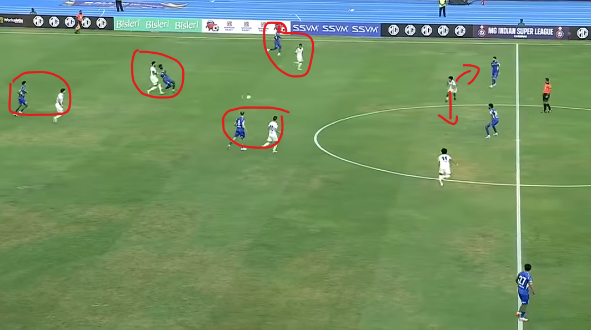
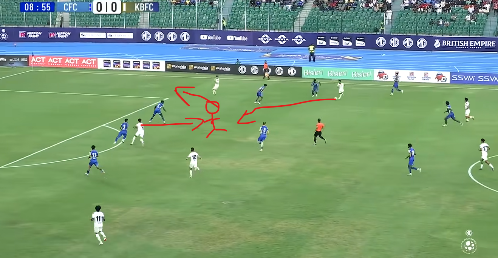
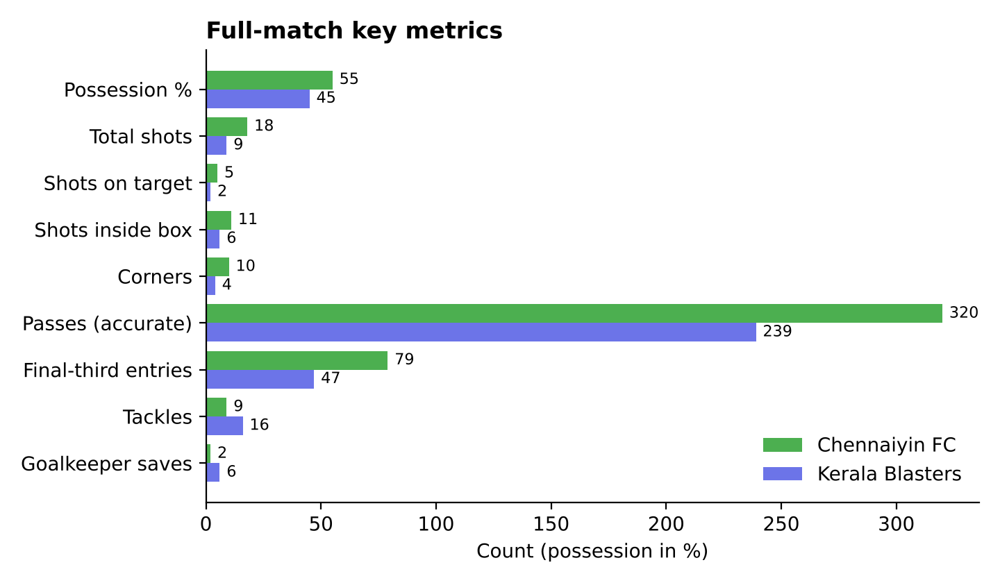
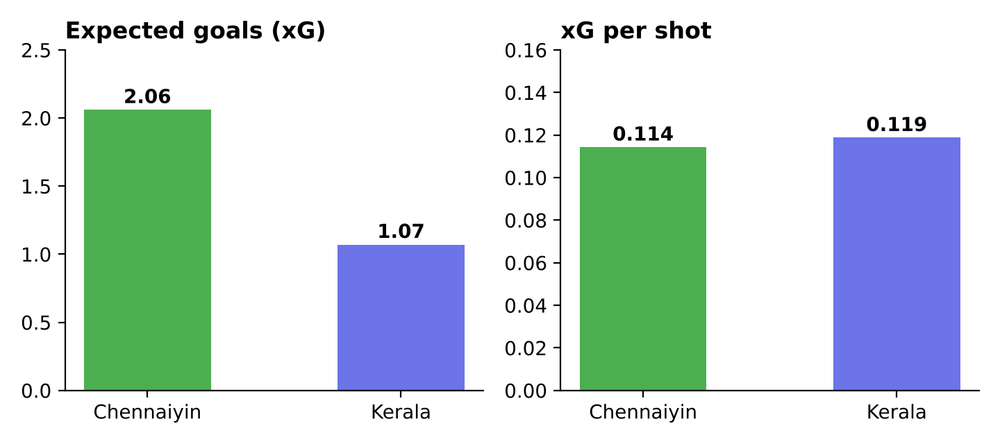
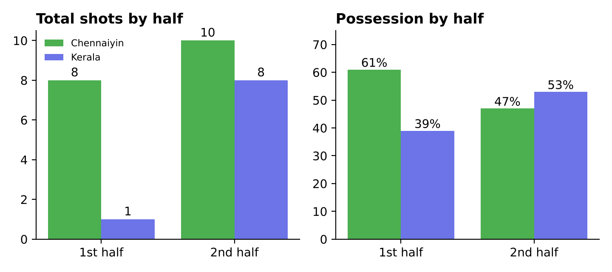
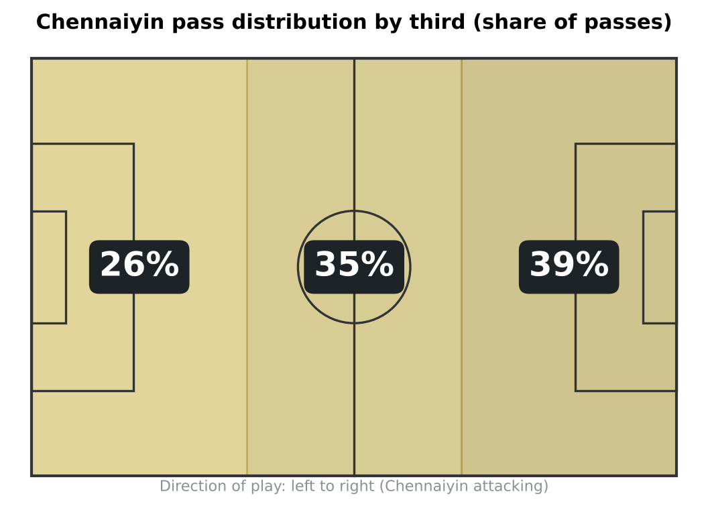
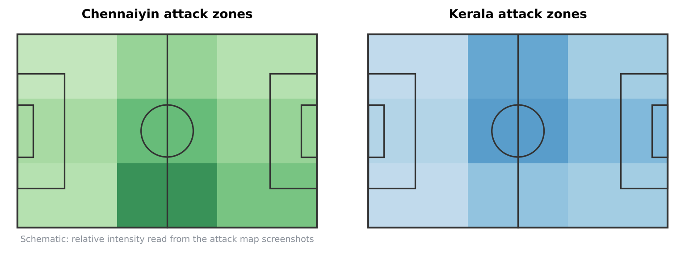
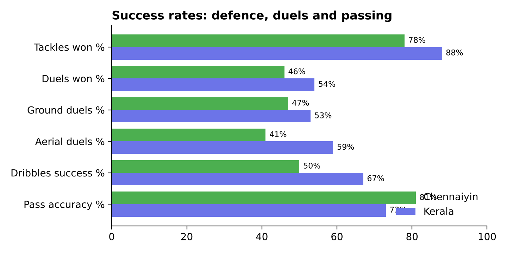
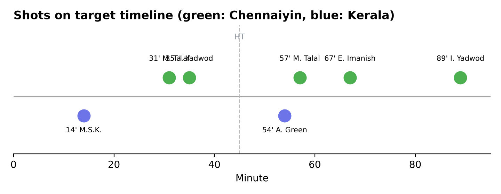

Chennaiyin FC vs Kerala Blasters FC
Structure, build-up, pressing, and key tactical moments: A detailed spatial and statistical investigation of 4-3-3 positional rotations, off-the-ball decoy runs, and a 2.06 vs 1.07 xG contest decided by goalkeeping.
The match finished 0–0, but Chennaiyin FC controlled possession and created superior shooting volume (2.06 xG from 18 shots vs 1.07 xG from 9 shots), while Kerala Blasters were more efficient per opportunity with 2 big chances and won the physical and aerial duels — leaving finishing and goalkeeping as the decisive factors.
Team Structures & Transitional Shapes
Both sides start from a nominal 4-3-3 base, but each fundamentally mutates depending on phase: whether they have the ball, how high the full-backs advance, and the trigger points of their pressing traps.
| Phase | Chennaiyin FC | Kerala Blasters FC |
|---|---|---|
| In Possession | 4-3-3 base: Full-backs advance high and the centre-backs build play, creating an asymmetric three-centre-back shape. | 3-2-2-3 attacking shape: Adrian Luna and Andrea Green lead the front line, with Kosovic, Sanan and Kouro in midfield and Freedy anchoring as the DMF. |
| Out of Possession | 4-4-2 mid block: Both wingers drop back to form a 4-man midfield line, while Thallal and Ramon push up to initiate first-line pressure. | 4-1-4-1 defensive block: Compact midfield line with Freedy sweeping between lines to intercept entries into Zone 14. |
| Pressing Structure | Thallal and Ramon press in tandem, with the wide wingers dropping to pinch passing lanes and close half-space gaps. | The striker presses; a central midfielder joins based on ball direction, and the three midfielders mark opponents tightly as pressing intensity rises. |
Kerala Blasters: Key Tactical Roles
Adrian Luna leads the press alongside Andrea Green, while Sanan advances selectively based on game state. The defensive midfielder operates as a pure destroyer, clearing high and low second balls. Aiban is the vital transitional chameleon: out of possession he slides into a central defensive role, while in possession he steps forward into defensive midfield alongside Freedy to establish rest-defense stability.
Chennaiyin FC: Key Tactical Roles
Chennaiyin's full-backs push high up the pitch, initially leaving just two centre-backs in the first phase. The No. 8 functions as the primary distributor, connecting the backline with advanced midfield corridors and feeding attacking channels. Thallal is afforded total positional fluidity to exploit pockets between Kerala's lines and drift wide to overload the right flank.
Chennaiyin FC: Major Attacking Plan
Chennaiyin's primary strategic blueprint is creating numerical superiority in central midfield and systematically neutralizing Kerala's man-marking scheme via coordinated full-back overlaps and wing rotations.
Chennaiyin work with intentional asymmetry: on the left flank, the left-back stays moderately advanced like an auxiliary wide midfielder, while two centre-backs stay deep. One midfielder drops into the deep pivot space, and another shifts wide to the opposite flank, creating a vacuum in the middle of the pitch.
The Overload Mechanism: On the right wing, Chennaiyin's right-back overlaps aggressively into the attacking third while the right winger drops inside into the half-space. This creates an immediate cognitive overload: Sanan is caught between covering the overlapping full-back or tracking the inverted winger, while Freedy is forced to track two runners simultaneously. This gives Chennaiyin an extra free passing lane every time the ball is circulated across the backline.
The execution relies on timing the pass between the two centre-backs. When Green commits forward to press one centre-back, the ball is recycled across to the partner, who immediately hits the overlapping full-back in open space while the wingers make diagonal penetration runs behind Kerala's defensive line.

2.1 Build-Up Under Man-Marking

Nicola Stojanovic is continuously man-marked by Adrian Luna. Earlier in the first half, when Kosovic entered Chennaiyin's defensive third with the ball, he was confronted with severely congested passing lanes. Luna, Sanan, and Green held proactive positions, but tight marking suffocated central progression.
The Kouro Dilemma: This congestion could have been shattered through an off-the-ball run by Kouro. Saheef, Chennaiyin's left-back, was solely responsible for the right-wing threat. A well-timed blind-side run by Kouro into the channel behind the defensive line would have forced Saheef into an insoluble dilemma:
- If Saheef followed Kouro: Kosovic would have been gifted acres of open central green to turn, carry forward, and fire at goal.
- If Saheef held his shape: Kouro would receive uncontested in behind with an open crossing angle into the box.
One-Two Combination Play
Kosovic could play a sharp vertical punch pass to Kouro's feet and immediately accelerate forward to receive the wall return behind the defensive line.
Wide Crossing Delivery
Kouro receives in the wide channel and delivers a whipped cross into Green and Luna attacking the far post.
Space Creation (Decoy Gravity)
Even without touching the ball, Kouro's diagonal run pulls defenders away, clearing central space for Kosovic to progress unchallenged.
Tactical Situations & Visual Breakdowns
Frame-by-frame analysis of coordinated off-the-ball movements, positional rotations, and wing progression dynamics.
3.1 Off-the-ball movements
Chennaiyin are in possession and executing a structured build-up to exploit Kerala's man-marking system. Ayush is tightly marked by Kosovic, while Luna is responsible for Nicola. Green is positioned to apply pressure, and Kouro is marking Saheef. The objective is to manipulate Kerala's defensive structure through positional rotations and coordinated off-the-ball movements.
Ayush drops deeper towards the centre-backs, while Nicola moves towards the wider area. At the same time, the right winger and central midfielder move into central areas to receive passes around the halfway line and in the half-spaces. These movements stretch Kerala's man-marking structure and create space. Chennaiyin's foreign centre-back recognises the space developing in front of the defensive line and steps forward, which gives access to two potential passing options in the central area.
Meanwhile, the left winger holds a wide position to provide an additional passing option and to receive the ball before making forward runs. The right-back also advances into the right wing, creating another positional rotation. This puts Freedy in a difficult position, as he has to account for two attacking threats at once.
Anticipate the Passing Lane
Read the intended pass, intercept it and apply pressure immediately.
Defensive Clearance
If the ball reaches a dangerous area, prioritise clearing it rather than allowing the attackers to progress.
Centre-Back Step-Out Intervention
Another defender can step forward to challenge the receiving attacker and disrupt the combination.
Tactical Foul
If the attacker receives the ball and begins to progress into a dangerous area, a tactical foul becomes a defensive option.
Sanan also moves across to support Freedy, helping Kerala manage the additional attacking threats. Overall, Chennaiyin are attempting to exploit Kerala's man-marking structure through positional rotations, width and central movement. Rather than relying on individual dribbling, the idea is to create uncertainty about defensive responsibilities and generate space for progression. This shows how coordinated movement in possession can challenge and potentially disrupt a man-oriented defence.

3.2 The 8th-Minute Right-Wing Progression
Kerala Blasters are usually strong defensively in this fixture, but their drawback is a lack of goals, so the focus here is on the attacking phase.

In the 8th minute, Kouro drives with the ball down the right touchline. He successfully progresses against three closing defenders, but attacking support ahead of him is disjointed. Andrea Green (No. 9) remains flat instead of dropping into the pocket to provide a bounce pass option.
Without dynamic third-man movement from Luna or Sanan, Kouro is forced into a congested inside pass to Kosovic. Kosovic, receiving under pressure with no runners in the box, has no alternative but to rush a delivery. The chance dissipates because individual progression was not matched by coordinated collective box arrivals.
A coordinated movement from Green, supported by Kosovic and the other attacking players, could have created a more dangerous sequence by combining through central areas, drawing defenders away and creating space inside the penalty area. The key observation is that Kouro's individual progression was not adequately supported by coordinated off-the-ball movement, which limited the effectiveness of the attack.
Key Tactical Observations
Six foundational strategic takeaways identified across the 90 minutes.
Green's Movement & Timing
Andrea Green was selected over Momo Yansane specifically for his vertical pace into the channels. While direct vertical balls can bypass congested midfields, timing is paramount. Green was flagged offside multiple times due to premature runs before the passing lane opened.
Passing Quality & Control
Kerala Blasters suffered from high pass-turnover rates (73.1% pass accuracy), preventing sustained periods of territory. In contrast, Chennaiyin maintained 80.8% accuracy, controlled the tempo, and exhibited superior positional connectivity.
Second-Half Tactical Adjustment
Kerala's coaching staff made effective interval adaptations. After struggling to service Green in the opening 45 minutes, they consistently located him in the channels after the break, triggering higher-quality attacking transitions.
Team Chemistry & Cohesion
Kerala's primary friction point was combination fluidity, largely attributable to truncated pre-season integration. As combination patterns mature post-international break, these attacking sequences will become significantly more clinical.
Chance Creation Asymmetry
First-half output was heavily skewed: Chennaiyin generated 8 of the 9 total shots and 61% possession, but largely through speculative efforts. Kerala flipped the territory in the second half, creating both of the match's big chances (0.50+ xG).
Full-Back Overlap Exploitation
In the first half, Kerala failed to exploit the immense spatial vacuum left behind Chennaiyin's high-advancing full-backs. Identifying and punishing this transitional space remains a key tactical developmental area.
Key Strategic Takeaways
Summary of game control, defensive duel efficiency, and decisive turning points.
Chennaiyin FC dictated the match through patient, structured build-up, aggressive full-back overlaps, and intelligent positional rotations. Their asymmetric three-centre-back rest-defense effectively restricted Kerala's wide counter-attacks in the first half.
While Kerala struggled in possession (45% share, 73.1% pass accuracy), their defensive organization was resolute. They won 88% of tackles and 54% of total duels, with their goalkeeper producing 6 crucial saves to preserve the clean sheet.
The decisive match adjustment occurred at half-time: Kerala began finding Andrea Green behind Chennaiyin's high defensive line. Kerala generated two big chances in the second half (against Chennaiyin's zero), proving that direct verticality was the antidote to Chennaiyin's high press.
Statistical Match Analysis & Visual Telemetry
A forensic statistical review of 2.06 vs 1.07 Expected Goals (xG), duel win-rates, pass distributions, and shooting timelines.
6.1 Full-Match Performance Comparison
| Metric | Chennaiyin FC | Kerala Blasters FC | Difference |
|---|---|---|---|
| Possession Share | 55% | 45% | +10% CFC |
| Expected Goals (xG) | 2.06 | 1.07 | +0.99 CFC |
| Total Shots | 18 | 9 | +9 CFC |
| Shots on Target | 5 | 2 | +3 CFC |
| Shots Inside the Penalty Box | 11 | 6 | +5 CFC |
| Big Chances Created | 0 | 2 | +2 KBFC |
| Hit Woodwork | 1 | 1 | 0 |
| Blocked Shots | 4 | 1 | +3 CFC |
| Corners | 10 | 4 | +6 CFC |
| Fouls Committed | 11 | 9 | +2 CFC |
| Accurate Passes | 320 / 396 (80.8%) | 239 / 327 (73.1%) | +81 (+7.7%) |
| Final-Third Entries | 79 | 47 | +32 CFC |
| Tackles / Tackles Won | 9 / 78% | 16 / 88% | +7 / +10% KBFC |
| Interceptions / Recoveries | 4 / 38 | 6 / 33 | -2 / +5 |
| Clearances | 15 | 22 | +7 KBFC |
| Goalkeeper Saves | 2 | 6 | +4 KBFC |
| Yellow / Red Cards | 3 / 1 | 0 / 1 | — |
6.2 Shot Quality & Efficiency Breakdown
Chennaiyin generated 2.06 xG with no goals, indicating that roughly two goals of expected output were unrealized due to poor finishing and outstanding goalkeeping. While Chennaiyin took twice as many shots (18 vs 9), Kerala's chances were slightly higher quality on average (0.119 vs 0.114 xG per shot) and yielded 2 clear big chances.


6.3 First Half vs. Second Half Tactical Shift

6.4 Spatial Pitch Maps & Passing Zones


6.5 Shot Timeline & Defensive Duels


• Goalkeeper Impact: Kerala's goalkeeper made 6 saves to keep the clean sheet against 5 on-target efforts (including rebounds and deflections).
• Physical Edge: Kerala won the contest in the trenches: 88% tackle success and 59% aerial duels provided the platform to absorb 79 final-third entries without conceding.
Methodological Caveats & Data Inferences
- Goalkeeper saves recorded by the data feed (6 saves) exceed shots on target (5 shots), likely reflecting credited deflections or close-range blocks.
- Attack and pass maps represent relative density coordinates read from broadcast tactical telemetry rather than continuous raw optical x,y event data.
- One dribble data-point for Chennaiyin was obscured in broadcast graphics and has been conservatively excluded from rate calculations.